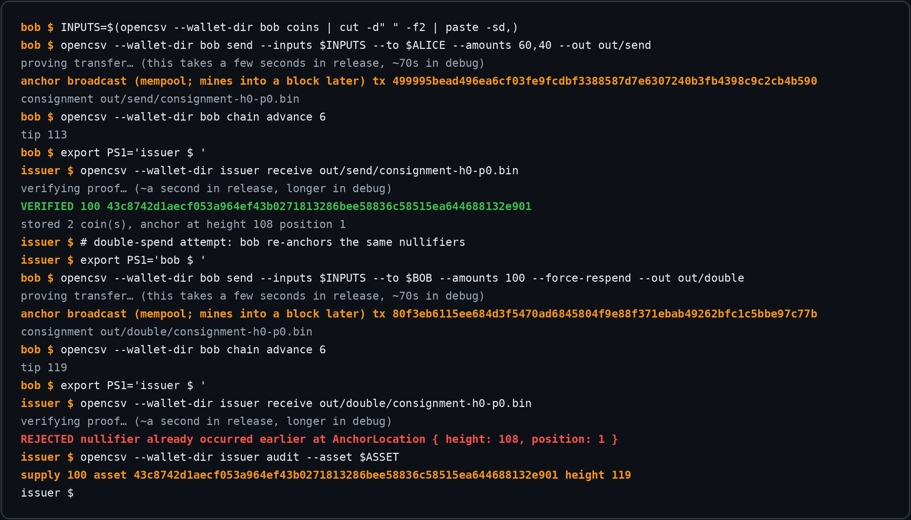

The issuer mints 100 USD
A mint is public: asset and amount go into the anchor, so anyone
can audit supply. In proof lineage v3, the coin proof itself proves
knowledge of the issuer seed bound by genesis. New anchors use the
unspendable marker OP_0 ∥ sha256(OP_RETURN); the historical
capture below predates that live-found migration.

The payment arrives as a Signal message
The consignment — coin openings plus a history-independent recursive proof of the coin's entire history — travels off-chain, end-to-end encrypted, as an ordinary Signal attachment. Signal sees ciphertext, never coins.
chat view with the consignment message
(iPhone 16e, signet)
The phone verifies — alone
The recipient's phone verifies the v3 recursive proof in tens of milliseconds, syncs compact block filters (kilobytes), finds the anchor block via the marker, and checks locally that the coin was never spent before. No RPC, no indexer, no trusted server — the bubble says +100 USD · verified.
the verified payment bubble
(iPhone 16e, signet)
Bob pays 40 back
The recipient key prefills from the chat. The prototype proved a 2-in/2-out transfer in about a second under the retired feasibility profile. The measured v3 phone cost is 11.25–14.47 seconds. In the final design, Rust—not Swift or an anchor server—also reserves Bitcoin fees, derives change, fixes the context, persists signed bytes, and relays.
send sheet, prefilled recipient + balance
(iPhone 16e, signet)
The CLI verifies Bob's transfer
On the other side, the text wallet runs the same verification: proof,
anchor position, local exclusion check. VERIFIED — the two
clients agree because the protocol is the proof, not the server.

A double-spend dies; the supply audits clean
Re-spending the same coin produces a conflicting anchor — the
first-occurrence rule rejects it at a real block location
(NullifierConflict). Meanwhile the public mint/redeem stream
sums the supply: anyone can check it, no permission needed.
